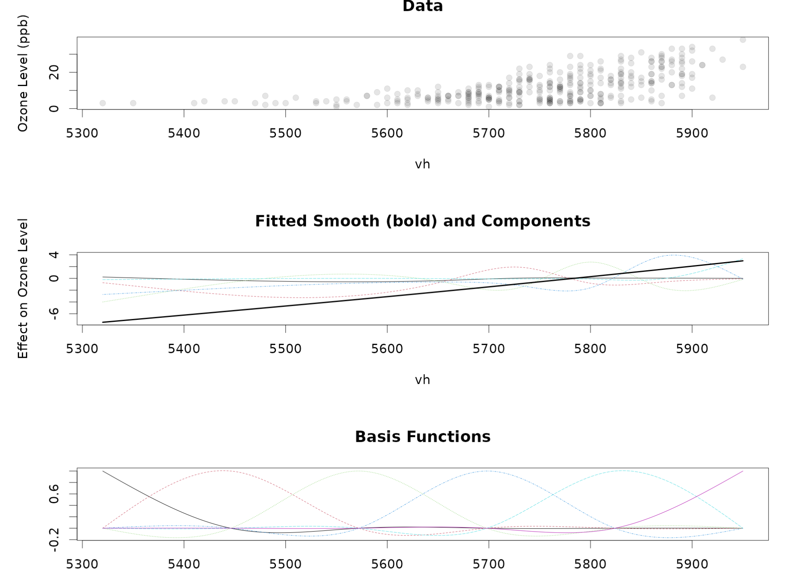

36 Generalized Additive Models - Introduction
36.1 Section Learning Outcomes
Before we got to hierarchical models, all the variations on regression models we learned were designed to allow us to model different types of response variables. Hierarchical models changed our models in a different way - they let us add more structure to our models, essentially considering different types of predictors (beyond just categorical and quantitative; adding random vs. fixed effects). Even earlier on, we used interactions to account for another “different way” for predictors and response to relate. This module, we will explore yet another (super useful!) model refinement that lets us model a relationship between predictor and response that is potentially non-linear, even non-monotonic. Or, with less jargon: relationships characterized by a smooth curve that may not be a straight line, and may even go up and down and wiggle around.
By the end of the module you will:
- Explain how basis functions are combined to create splines
- List characteristics of some common types of splines, and choose an appropriate type for a specific application
- Understand how degrees of freedom/basis dimension controls the “wiggliness” of a spline, and set a basis of appropriate size for a specific application
- State an appropriate rationale for whether a given predictor variable should be included in a model as a linear or a smooth term
- Plan and fit generalized additive models in R
36.2 Text Reference
Recommended reading for the materials covered in this tutorial can be found in:
- Course Notes Chapter 19
- GAMs in R, Chapter 1
- GAM workshop materials) (A bit older, from 2016, but still with some helpful background presented at a nice level)
It’s suggested that you consider consulting these resources after doing this tutorial, with particular focus on any topics you found most challenging.
36.3 Already Nonlinear
This module, we’re learning to fit models with non-linear relationships between predictor and response. But it’s important to give a little more detail about what exactly we mean by that, and to acknowledge that actually we’ve already been working with models that are “non-linear” in one way or another for a while! Can you think of some examples you’ve already seen in this course?
Categorical predictor variables
Any regression model with a categorical predictor variable allows for nonlinear relationships (of a sort).
Making use of indicator variables for (all but one of the) categories, we can model a situation where each value of the predictor variable has a different effect on the response.
So…why go further than this?
We might imagine just forcing every (continuous quantitative or count) variable that we think has a nonlinear relationship with the response to be categorical, binning values appropriately to make it so.
In fact, we have already done this sometimes – for example, treating variables like day of the week, month of the year, etc. as categorical.
But that could lead to some problems, among them:
- How many categories is the right number?
- In some cases, it might be hard to decide.
- In others, we might need so many categories that the variable becomes unwieldy, requiring estimation of a ton of parameters and thus a very large dataset.
- What about periodicity? Some predictors - often those associated with time (day of week, month of year, etc.) or angles, are measured on a periodic scale. In these cases, we’d usually want the response variable value at the very end of one cycle to match up with the value at the start of the next; for example, if we are predicting expected snowfall as a function of day of the year (1-365), there probably shouldn’t be a huge jump between the expected amount on Dec. 31 and the one on Jan 1. Treating day-of-year as categorical would not enforce this smooth periodicity.
GLMs
In binary or count regression, predictor-response relationship is linear on the scale of the link function ( = scale of the right-hand side of the equation), but non-linear on the scale of the response variable (left-hand side of the equation).
Think of the prediction plots you’ve made for quantitative predictors in count and binary regression models – they often show curves rather than straight lines, of course!
So…why go further than this?
Well - the relationships between predictors and responses in count and binary regressions are nonlinear, but of a very particular form. They are log-linear, or logit-linear…and have very specific, characteristic possible shapes.
In particular, they are always monotonic. You’d never get a trend that is rainbow-shaped, or u-shaped, or wiggling-up-and-down-repeatedly, or any number of other possible shapes that you might want to model in real data.
36.4 Roads not Taken
There are a number of popular options for modeling nonlinear relationships that we won’t pursue in this course, and for each one I’ll try to give a reason why it’s not the approach we’ve chosen.
Transformations of predictors or response (log, powers, etc.)
Often people will try to apply a function to predictor variable(s) and/or the response variable in order to obtain a linear relationship between the predictor and response, and residual normality, in fitting a simple linear regression model.
This sometimes works, but it often greatly complicates interpretation (you have to think in terms of the logarithm of height depending on the square root of mass, etc.).
Another variation on this approach is to add additional polynomial terms (adding \(\text{predictor}^2\), \(\text{predictor}^3\), etc.) to achieve a nonlinear total relationship between a certain predictor and the response.
There is something of a science to figuring out how to do this, and if you are interested you can review (totally optional) online notes about the Ladder of Power Transformations and the Bulge Rules.
An approach of this type is suitable - maybe even necessary - with theoretical justification. That is, if the underlying physics of your scenario tells you that your response variable will depend on the square of the length of an object, by all means use \(\text{length}^2\) as a predictor.
In the absence of theoretical justification, though, choosing transformations can be a bit ad-hoc. There are systematic ways of choosing (see above about the Ladder of Transformation and Bulge Rules), but as already mentioned, applying ad-hoc transformations makes interpretation of results more challenging.
In addition, sometimes it just doesn’t work very well: you can’t always find a transformation to linearity, or a polynomial combination that yields a good match between model predictions and trends in the data.
Our preference is for one, flexible solution to get any shape that might be needed, without too much analyst control or arbitrary decision-making. We’d also like to be able to easily get predictions, and prediction plots, on a natural scale: the same units of measure as the response, not the log of the response or the response to the \(\frac{2}{3}\) power or anything else like that.
Enter: GAMs! (That stands for Generalized Additive Models.)
36.5 Data: Bats
To get an idea of the type of dataset - and the type of nonlinear relationships - we might be trying to model, let’s consider an example.
This dataset comes from a 2017 paper by Dina Dechmann and colleagues, called “Determinants of spring migration departure decision in a bat.” The authors were interested in studying how migratory bats decide when to begin their migration journey. The abstract says,
[Conditions that] trigger bat migration [remain unknown]. To learn more about the rare phenomenon of bat migration, we studied departure decisions of female common noctules (Nyctalus noctula) in southern Germany… Female noctules departed after a regular evening foraging session, uniformly heading northeast. As the day of year increased, migratory decisions were based on the interactions among wind speed, wind direction and air pressure. As the migration season progressed, bats were likely to migrate on nights with higher air pressure and faster tail winds in the direction of travel, and also show high probability of migration on low-pressure nights with slow head winds. Common noctules thus monitor complex environmental conditions to find the optimal migration night.
This suggests that there are optimal conditions for bat migration - so non-monotonic relationships may well be present (for example, bats migrate when air pressure is high enought, but not too high).
You can read in the data as shown below:
bats <- read_csv('https://ndownloader.figshare.com/files/9348010')Variables in the dataset include:
- Timing information: the
date,julian.dayof data collection,julian.day.of.capture(to attach a tracking tag),days.since.capture tx.frequency, the radio frequency at which the bat’s tracking tag transmits (we should ignore this, or could think of it as an individual ID)- Information about the bat:
sexmass.gramsforearm.mmforearm length in mmcapture.body.condition(bigger is fatter and better)
migration, which is 0 if the bat did not migrate this day; 1 if it did- Information about environmental conditions:
cloud.cover(higher is more)windspeed(in meters per second)winddirection(in degrees)airpressure(likely measured in millibars)airtempin degrees Celsiusrelativehumidity as a percent
Let’s try exploring this dataset a bit to see what kinds of nonlinear relationships are present between the response variable migration and some predictors describing the environmental conditions. Remember, the study authors concluded that bats chose to depart on their migrations when the wind speed, direction, and air pressure were just right. But there may also be other stuff going on in the data – the approach the authors used to get their conclusions was very unlike what we’d use.
In the block below, there are some “hints” of things you might try, but feel free to get creative, too! You’ll likely need to prep the data a bit by grouping observations and computing a proportion migrating for each group, in order to really see what is going on.
gf_boxplot(relativehumid ~ factor(migration), data = bats)
bats2 <- bats |>
# bin humidity into 7 levels (feel free to try changing the number!)
mutate(humid_bins = cut_number(relativehumid, n = 7)) |>
# group by humidity level
group_by(humid_bins) |>
# compute the median humidity and proportion migrating in each bin
summarise(median_hum = median(relativehumid, na.rm = TRUE),
migration_prop = sum(migration) / n() ) |>
ungroup()
gf_point(migration_prop ~ median_hum, data = bats2) |>
gf_labs(x = 'Relative Humidity',
y = 'Proportion Migrating')
bats3 <- bats |>
# bin wind speed and direction
mutate(windspeed_bins = cut_number(windspeed, n = 7),
winddirection_bins = cut_interval(winddirection, n = 4)) |>
# group by bins
group_by(windspeed_bins, winddirection_bins) |>
# compute the median/mean speed/direction and proportion migrating in each bin
summarise(median_windspeed = median(windspeed, na.rm = TRUE),
mean_winddir = CircStats::circ.mean(winddirection),
migration_prop = sum(migration) / n() ) |>
ungroup()
gf_point(migration_prop ~ median_windspeed | winddirection_bins, data = bats3) |>
gf_labs(x = 'Wind Speed (m/s)',
y = 'Proportion Migrating') |> gf_lims(y = c(0,1))
bats4 <- bats |>
# bin wind speed and direction
mutate(pressure_bins = cut_number(airpressure, n = 10)) |>
# group by bins
group_by(pressure_bins) |>
# compute the bin median and proportion migrating in each bin
summarise(median_pressure = median(airpressure, na.rm = TRUE),
migration_prop = sum(migration) / n() ) |>
ungroup()
gf_point(migration_prop ~ median_pressure, data = bats4) |>
gf_labs(x = 'Air Pressure',
y = 'Proportion Migrating') |> gf_lims(y = c(0,1))
bats5 <- bats |>
# bin wind speed and direction
mutate(pressure_bins = cut_number(airpressure, n = 10),
winddirection_bins = cut_interval(winddirection, n = 4)) |>
# group by bins
group_by(pressure_bins, winddirection_bins) |>
# compute the bin median and proportion migrating in each bin
summarise(median_pressure = median(airpressure, na.rm = TRUE),
migration_prop = sum(migration) / n() ) |>
ungroup()
gf_point(migration_prop ~ median_pressure | winddirection_bins, data = bats5) |>
gf_labs(x = 'Air Pressure',
y = 'Proportion Migrating') |> gf_lims(y = c(0,1))What patterns did you notice? How were you able to improve on my graphs?
Make a couple of mental or actual notes about the patterns that you see: how would you describe the trend? Is the trend monotonic? Would you say it’s very wiggly (lots of ups and downs) or just a little (which is more common)? Is the predictor you looked at periodic, or not?
Take a quick screen shot of your best graph that does show a nonlinear trend, and save it for later - it will come in handy for one of the practice problems next module! (You’ll be asked to upload your screen shot, briefly describe what you see, and write the code you’d use to specify a smooth terms for your predictor if you were to fit a GAM to this data.)
36.6 Goal: Smooths
Our goal is to fit a model for a response variable of interest, including some smooth (nonlinear) terms. We would like it if:
- The predictor-response relationship can be linear, or nonlinear with any shape
- We’d like some control of how much “wiggliness” is allowed
36.7 Basis functions
We are going to build each smooth term we are interested in as a scaled sum of a set of basis functions. Here’s the basic idea:
- Several parts, or basis functions, sum to form a smooth
- Each has simple shape
- Scaled and added together, yield nearly any shape
- Higher basis dimension (more functions added together) can allow for more wiggles
- Goal: enough flexibility to fit data well, without overfitting
That’s kind of a lot…here’s a picture to try to show what I mean. In both panels, the x variable vh is a predictor for which we want to estimate a smooth term in a regression to predict atmospheric Ozone levels.
The top panel shows the data: response variable Ozone and candidate predictor vh (let’s not worry about what that actually is).
The bottom panel shows a set of basis functions with dimension k = 6. Notice it’s made up of 6 different curves of different colors, all with the same shape, but centered at different points to cover the range of possible predictor variable values.
The middle panel shows the fitted smooth (the fat black line). It’s pretty much a straight line in this case, since the trend between vh and Ozone is nearly linear. But how did we get that straight line? In fitting the model, gam() estimated scaling coefficients for each basis function (the colored curves). Notice some of them are squished down nearly flat in this panel, while others (like the light blue one on the right) are still taller? After this scaling, if we add all the basis functions together (literally), we get the black smooth. So cool! You will get to see more examples soon…

36.8 Overfitting
We’ve already mentioned several times that we want to avoid “overfitting”… so, what is this overfitting that we want to avoid?
Basically, overfitting is when your model matches the patterns in the dataset to which it’s fit too well – modeling not only the underlying trends but also the noise!
Underfitting is the opposite: when the model is too simple to capture the true patterns in the data.

If you want a short video explanation from a machine learning perspective:
From a machine learning point of view, checking a model’s predictive performance on testing data is a key to fighting overfitting; but in our statistical-inference focused approach, we don’t generally split our data for training and testing or rely on prediction accuracy as much as an outcome. But nevertheless, we can still use approaches related to the ones briefly mentioned in the video to protect against overfitting; this module we will see a bit about shrinkage and penalization.
36.9 mgcv::gam()
SO…we want to be able to fit regression models with smooth terms in them, fitted in such a way as to protect against overfitting (without underfitting). To specify these models, we already have a hunch that we will need to know something about basis functions (there are many different types so we’ll need to pick one) and that there will be some other settings that we have to specify.
We’re going to fit our GAMs using the most commonly used R package for the job, mgcv and its gam() function.
Take note – although the first examples we’ll see will be Gaussian GAMs (like linear models, but with smooths - LINE conditions) – we will be able to fit gam()s of any family (linear, binary, count) depending on our response variable type.
But to fit these models, we will need to make some choices.
Let’s explore some of the choices related to the type and dimension of the basis to be used, interactively…to help us, I’ve made a little Shiny App
Use the app yourself! Choose one (or more) candidate predictor variable and to try to investigate:
- What choices of smooth type (
bsinput togam()) and/or choice ofkwork well for your variable? - What choices of smooth type and
kcan result in a smooth that seems overfitted? - Can you get a model to underfit, or mismatch to data in some other way?
- What does shrinkage (
bs = _s– the basis types that end with “s”) do?
Access the app at: https://stacy-deruiter.shinyapps.io/smooth/
- Yes, people definitely do just ‘make them all smooths’ (all quantitative predictors, that is) when the dataset is large enough. This is ok because the smooth can be, or very closely approximate, a straight line if that’s what the data support. It can be a waste of estimated parameters, though, which you may not be able to afford if your dataset is small.”
- As far as using data graphs to decide: You can only make data-driven choices about which terms to include as smooths IF you are not intending to do inference later (if prediction is your sole objective, or, if your analysis is just exploratory). An exception is if you fit a model, and then find that it fails assessment due to nonlinearity. In that case, the original model is useless, and there’s nothing to lose in fixing it by adding a smooth term.
- Planning your model carefully based on throughful consideration of the situation and context is always a good bet.
- Only quantitative predictors can be fitted as smooth terms. (The exception (kind-of) is random effects; there’s a syntax for specifying a random effect in a GAM that looks like a smooth. Stay tuned for details later.
bs = 'cc')?
A cyclic basis enforces that the values at the smallest and largest possible values of the predictor match (the function is continuous there). For non-periodic predictors, this restriction rarely makes any sense.
Let it be a source of comfort that regardless of the basis type you choose, in many cases, it will work just fine. There are special situations where the choice really matters, but often it’s true that many of the options will work perfectly well.
In addition to the options you looked at, there are other fancier options available for special situations (for example, geospatial modeling and modeling interactions between categorical predictors and smooth terms). We won’t get into those in this short module, but may see them in some later examples at the end of the course. For now, remember that either a thin-plate shrinkage basis (bs = 'ts') or a shrinkage cubic regression spline basis (bs = 'cs') are pretty good general defaults.
36.10 gam() formula syntax
Now that we have some idea what basis functions are and what k means, let’s talk about how to write a model formula for gam() to fit a GAM.
In the formula for a GAM fitted in gam(), the function s() specifies a smooth. s has inputs:
- variable name(s)
k(see?choose.kin R for more info, if what you learn here isn’t enough!)bsthe basis typebyused when you want a smooth that interacts with a categorical predictor
So a call to gam() might look something like:
gam(response ~ non_smooth_predictor + categorical_moderator + s(smooth_predictor1, bs = ___, k = __) + s(smooth_interacting_predictor, bs = ___, k = ___, by = categorical_moderator) + other_categorical_predictor + ..., ...)
Notice a couple things:
- We can include predictors that are not being modeled with smooth terms just like in previous models
- the
byinput to a smooth specifies a categorical variable that interacts with the smooth term, effectively estimating a different smooth for each level of the categorical variable. If you do this, you also need to include the categorical predictor as a “normal” predictor too. - You will choose values of
bsthe basis type, andkthe basis dimension
How will we make these choices? Based on your exploration already, you may have some idea. Here are some tips…
Choosing a basis dimension
For general use, “cs” and “ts” are good defaults. They are both “shrinkage” bases which means that if appropriate the smooth can shrink down to nothing – a flat line with 0 slope. This is one way to help guard against overfitting.
Choosing k
Choosing a smaller k guards against overfitting.
Choosing k too large may mean the model takes longer to fit or maybe even overfits.
the mgcv documentation says, (helpfully!) “k must be chosen: the defaults are essentially arbitrary.” Ahhh, so how do we choose? The documentation also states,
[k] should be chosen to be large enough that you are reasonably sure of having enough degrees of freedom to represent the underlying ‘truth’ reasonably well, but small enough to maintain reasonable computational efficiency. Clearly ‘large’ and ‘small’ are dependent on the particular problem being addressed.
Hmmm, super helpful…
Basically, if k is in a reasonable range it should work. If it’s too large, you are wasting parameters and maybe computation time, and may even get errors if you don’t have enough data to estimate all those parameters. But if using our suggested default settings and the gam() function, the model still probably won’t overfit. Sometimes choosing k small (like 3-6 or so) is a way of limiting the possible wiggliness of a smooth, when you have theoretical reason to believe the true relationship just couldn’t be that wiggly. But if lots and lots of ups and downs are plausible and the dataset is big, bump k up.
Roughly, you estimate k model parameters to fit your smooth term, and it can have around k ups and downs in it (neither of these is exact, but good enough to have a general idea of model size and make decent choices of k).
36.11 n/15?
Previously, we’ve used the n/15 or m/15 rule to estimate about how many parameters we can reasonably estimate, given the size of our dataset.
Those constraints still apply, and the larger k you choose, the more parameters you’re estimating!
So take care: like categorical predictors with many levels, smooth terms can require a lot of parameters to be estimated and thus require quite a bit of data!
36.12 Random Effects
gam() can also easily fit models with simple (not nested) random effects.
The syntax is to add to the model formula: s(random_effect_variable_name, bs = 're').
The ‘re’ basis type is specifically for random effects. Your random effect variable must be categorical, and must be of factor() type.
So if we were modeling mass as a smooth function of height with a random effect of species, we might write: gam(mass ~ s(height, bs = 'cs', k = 7) + s(species, bs = 're'), data = my_datset).
Not that for the ‘re’ basis only, there’s no need to specify k.
36.13 gam() Options
In fitting a gam() there are a few more methods and options to consider:
- the
methodinput togam():method = 'GCV.Cp'method = 'REML'method = 'ML'(we choose this one because it’s the best option if you plan to do inference later on using hypothesis tests)
select = TRUE(orFALSEbs = 'cs'orbs = 'tp'with this is a bit redundant, but doesn’t seem to cause problems; and you want this option if you are using other bases, like ‘re’ or ‘cc’.)
36.14 Snow Data
OK, that first bat example got us thinking a bit about the kinds of trends we might model with a GAM, and then we took in a lot of abstract information about GAMs.
Now, let’s learn a bit how GAMs actually work in practice, with an example. We’ll use a different dataset; this time our case study is data collected by the: GRR weather station at the Grand Rapids airport. Metadata about this dataset is also available online.
We can read in and do some minimal data prep via:
grweather <- read_csv('https://sldr.netlify.app/data/grr-weather-metric.csv',
show_col_types = FALSE) |>
select(SNOW, TMIN, DATE, TSUN) |>
mutate(MONTH = lubridate::month(DATE),
DAY = lubridate::yday(DATE),
YEAR = lubridate::year(DATE),
WEEK = lubridate::isoweek(DATE),
# this new variable will be the snow one day ago
PREV.SNOW = lag(SNOW)) |>
drop_na()Variables in the dataset are now:
DATE,MONTHof the year,DAYof the year (1-365),WEEKof the year (1-52)- Amount of
SNOWin millimeters - Amount of snow the previous day:
PREV.SNOW TMIN, minimum temperature in degrees CelsiusTSUN, daily total sunshine in minutes
Again, let’s explore the data a little bit. There are definitely some nonlinear, non-monotonic trends here, as you might guess – no huge surprises, but at least the patterns we see make sense…
You might ask why we’re exploring the data before planning our modeling approach. Good question!
This is definitely “night science” type work, where our goal is not to do inference…
but to learn what GAMs are all about.
So getting very familiar with the data first of all makes sense.
As with the bat data, take a peek! Some graphs are suggested for you in the “hints,” but you are invited to make your own.
gf_point(SNOW ~ DATE, data = grweather, alpha = 0.2)
gf_boxplot(SNOW ~ factor(MONTH), data = grweather, alpha = 0.2)
gf_point(SNOW ~ TMIN, data = grweather, alpha = 0.2)
gf_point(SNOW ~ TSUN | cut_width(TMIN, width = 5), data = grweather, alpha = 0.2)
gf_point(SNOW ~ PREV.SNOW | cut_width(TMIN, width = 5), data = grweather, alpha = 0.2)
gf_point(SNOW ~ DAY, data = grweather, alpha = 0.2)36.15 GAM Example - Snow
Notice the options that were chosen above.
Try running the code. There are three less-than-ideal choices; can you spot them and fix them?
(With sensible choices, it will run without errors very quickly.)
snow.gam <- gam(SNOW ~ s(DAY, k = 20, bs = 'cc') +
s(TMIN, k = 5, bs = 'cs') +
s(YEAR, k = 5, bs = 'cs') +
PREV.SNOW,
data = grweather,
method = 'ML',
select = TRUE)
summary(snow.gam)There could be other ok solutions too - it doesn’t have to be “cs.”
But the basis type should not be random effect (“re”) for a quantitative predictor…
or cyclic (“cc”) for a non-periodic one!
We need not choose 20 exactly for k for DAY, but 200 is ALOT and takes a pretty LONG time to run (although it doesn’t seem to actually overfit much).
Whoohoo! We did it! Well…now what?
36.16 Model Assessment
- Conditions (for family used) must be met:
LINE orLI, mean-variance (Basically, same as it ever was…but, of course, with no linearity constraint for smooth predictors.) - All conditions must be checked just as for
(g)lm(mTMB)()models we’ve worked with before - except linearity!
36.17 What’s next?
Clearly, we need to understand not only how to specify and fit GAMs, but also how to interpret the fitted model, make inferences, and of course make prediction plots. Prediction plots are incredibly useful in this case, because just staring at a set of lots and lots of scaling coefficients for each smooth is nearly impossible to make sense of! On the other hand, a prediction plot shows us what the model says the predictor-response relationship looks like much more clearly.
That said, I can’t resist - let’s peek at an example prediction plot to see what we have wrought.
Notice: A) Cool! but also B) these predictions are for all 365 days of the year, but holding the temperature constant at about 5 degrees Celsius (41 Fahrenheit).
Ugh - not realistic for summer OR snowy weather.
We could at least pick something below freezing…even though there are still issues there…or what if we asked for a range of temperatures?
Still not at all perfect, but it’s not because it’s a GAM - it’s because there are combinations of predictor values (freezing summer days and hot winter days) that are just about outright impossible. At least this second attempt lets us see predictions for both cold winter days and hotter summer ones…
OK, more work on interpretation and practice is coming in the next section - see you there!